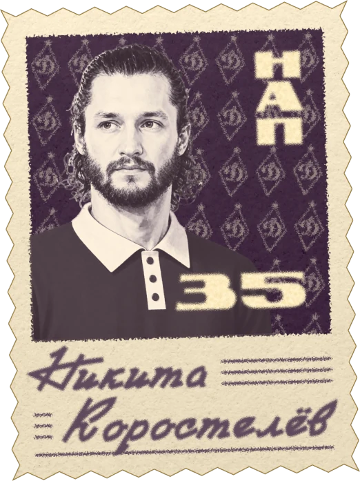
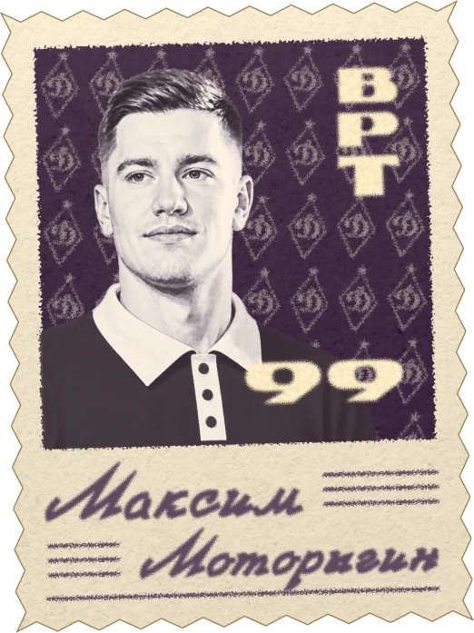
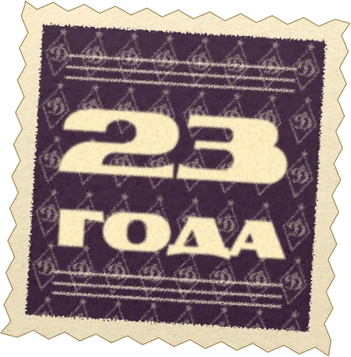
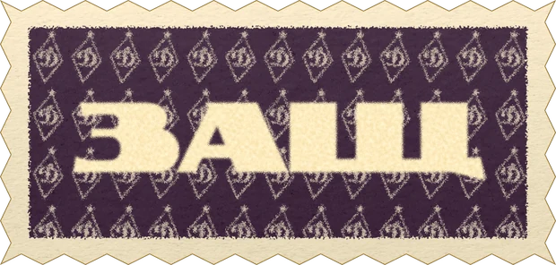
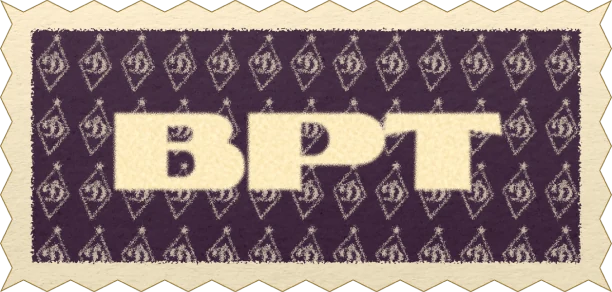

Проект 04 · Рубрика · SMM · 2026
Платёжка 2.0
Рубрика канала «Улитки Кокарева» про трансферы, контракты и зарплатную ведомость «Динамо». Вторая версия стала старым альбомом с марками: крафт, конверты и ромб старого логотипа.


 Новый трансфер40 млн
Новый трансфер40 млн
Задача
Трансферы и зарплаты — главная тема межсезонья, но цифры обычно подают сухими таблицами.
Хотелось, чтобы за контрактами было интересно следить и чтобы подписчик с одного взгляда понимал, кто пришёл, за сколько и во что обходится вся команда.
Как думал
Платёжка — это ведомость. Значит, рубрика должна выглядеть как старый альбом с марками из клубного архива.
Крафтовая бумага, пружина, почтовые марки с игроками. На марке фото, номер, амплуа и фамилия, под ней возраст и сумма контракта. Фиолетовая обложка, а вместо современного логотипа ромб со звездой из истории клуба.
На карточках игроков стоит знак «80 лет»: в 2026 году хоккейному «Динамо» исполняется 80, и ретро здесь не просто стиль, а повод.
ДеталиАнатомия марки
Каждый игрок в альбоме — почтовая марка. Все марки собраны по одним правилам, поэтому весь альбом читается как одна коллекция.

- ПаттернРомбы старого логотипа «Динамо» на фоне
- ФотоТёплый монохром, как на старой печати
- КрайЗубцы, как у настоящей почтовой марки
- АмплуаНАП, ЗАЩ или ВРТ
- НомерКрупно, тем же шрифтом, что и амплуа
- ИмяОт руки, на линованной строке
ДеталиНабор марок
Марки сделаны отдельными элементами: игрок, амплуа и возраст. Из них собирается и разворот ведомости, и любая новость.





Второй период · Что сделалВедомость
Обложка с итогом, а внутри по разворотам нападающие, защитники, вратари и отдельная колонка слухов. Нажмите на разворот, чтобы рассмотреть марки.
НовостиПисьмо из клуба
Каждая новость приходит в конверте: марка игрока, возраст, амплуа и красный штамп с суммой. Второй слайд — карточка игрока в юбилейном стиле с автографом.
ДеталиАнатомия карточки
Карточка — второй слайд каждой новости. В ней те же ромб, бумага и рукописные имена, что и в марках, только в цвете и крупно.
- ПолосыВертикальные полосы в цвет бумаги в верхнем углу
- Форма 1946Ретро-поло с воротником — отсылка к самой первой форме ХК «Динамо» 1946 года
- Знак «80 лет»Ромб со звездой: в 2026 году хоккейному «Динамо» 80
- РомбБольшой ромб старого логотипа на фоне
- Имя и номерИмя от руки, номер и фамилия в одну строку
- АвтографПодпись игрока на свободном поле внизу
ДеталиКарточки игроков
Наведите на карточку, чтобы покрутить её, или нажмите, чтобы рассмотреть автограф.


Что вышло
Весь сезон 2026/2027 в одном альбоме, который удобно листать прямо в Telegram.
Каждая новость меняет ведомость, а обложка показывает итог на сегодня.